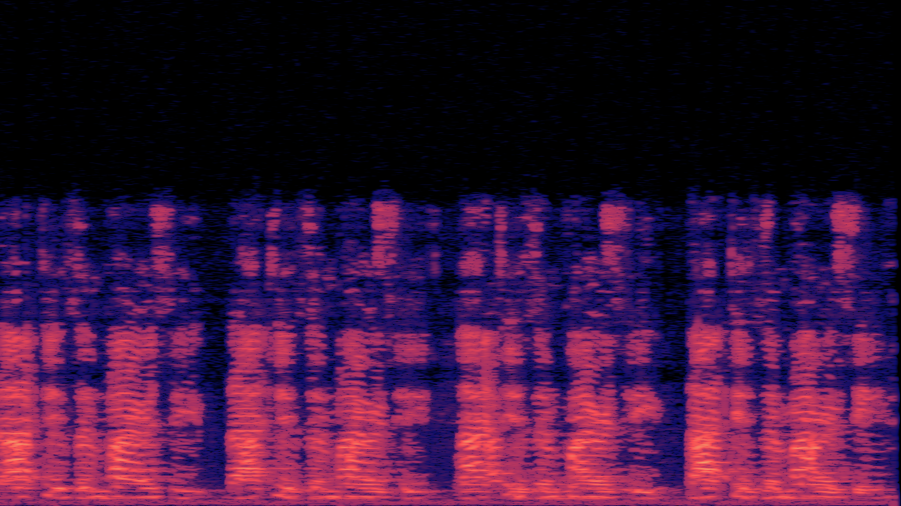
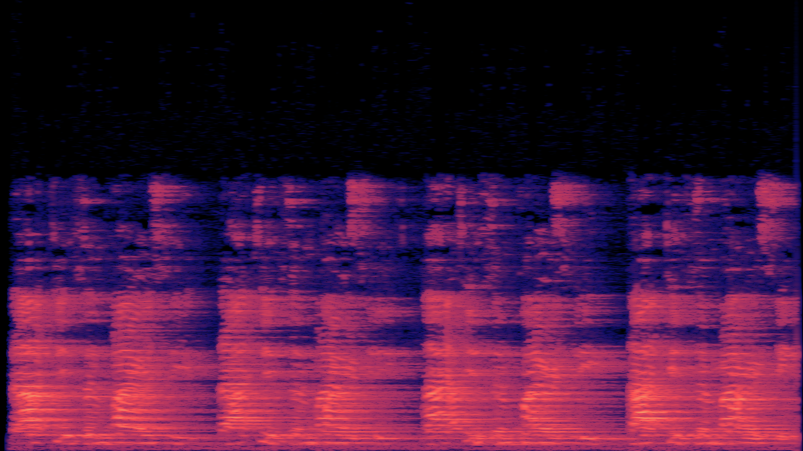
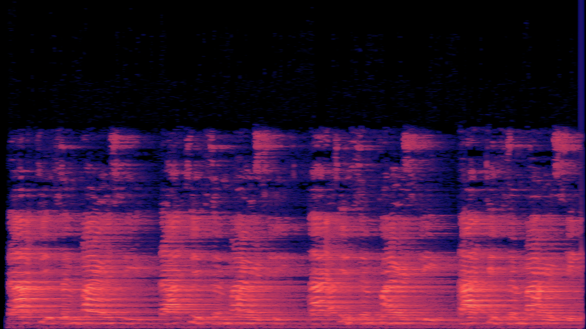
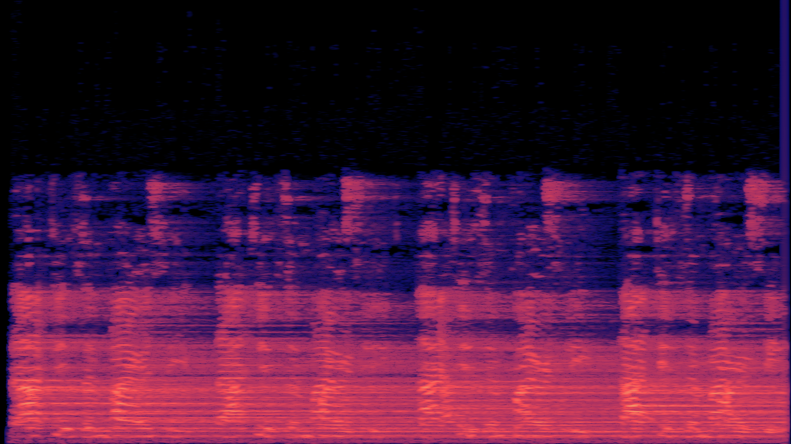

9.35 Illusion Laboratory
Spring 2021 Auditory Lab

Can reverberation break bi-stable interpretations of speech?
In this illusion, there are 4 different versions of the same audio. In the original, a phrase is being said by multiple people simultaneously; this sentence has several different stable interpretations including but not limited to: that isn’t my receipt; lactates in pharmacy; baptism piracy; that is embarrassing. Each person is actually saying a different phrase, but in unison, it sounds like they are saying the same phrase, further ensuring ambiguity in the perception of the audio.
We aimed to clarify whether or not reverberation can break multistable interpretations of the audio. We added three different levels of reverberation to the audio; a small room condition, a large room condition, and a cathedral condition. Try listening to the audio with reverb and see if your interpretation changes.
(headphones suggested, though not required)
Original Condition:
Small Room Condition:
Large Room Condition:
Cathedral Condition:
Inspired by Assman P, Summerfield Q. The perception of speech under adverse acoustic conditions. In: Greenberg W, Ainsworth, R. Popper, R. Fay (eds). Speech Processing in the Auditory System. Springer Handbook of Auditory Research, Vol. 18 (in press).